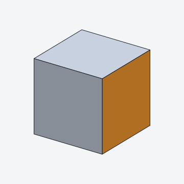
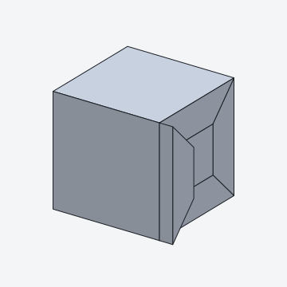

This page is the shared picture of the project. If anything here turns out to be wrong, this page gets fixed before any more work happens.
Train a small network that looks at a 3D shape and works out the modeling steps that build it. The steps are things like "extrude this face" or "inset that face".
Training that network needs many examples of a shape together with the steps that made it, and that data does not exist for polygon meshes.
The data can be made backward. We pick random steps first and then run them. The result is a shape whose steps are already known, because we chose them, and that makes every run a correct example.


The network plays one small game, repeated at every step.
The move is applied, and the game repeats from the new mesh. Building a whole shape is that game played a few times in a row.
| Measure | The question it answers | How it is computed |
|---|---|---|
| Next-move accuracy | Does it pick a sensible single move? | Show it a mesh and a target. Count how often its move matches the recorded one. |
| Rebuild rate | Can it build a whole shape? | Let it make up to 5 moves from a cube. Count how often the result matches the target. |
| Shape distance | When it misses, how far off is it? | Sample points on both surfaces and measure the average gap. This is called Chamfer distance. |
Random steps only make random-looking shapes. Later, a 3D generator such as TripoSR supplies real target shapes, like a chair. The network tries to build them. Every attempt becomes a new example, even a miss, because the moves always describe the shape they built. None of this is built or decided yet.
The end product is a dataset where every shape comes with the steps that built it. This section is a first sketch of what a good one holds, how big it is, and how its contents are sorted. All of it is proposed.
| Part | What it is | Why it is there |
|---|---|---|
| Start mesh | The shape before any move. A cube for now. | The history needs a fixed starting point. |
| Move list | Each move with its type, its target and its amount. | This is the history. It is the part no other dataset has for polygon meshes. |
| Mesh after every move | Vertices and faces at each step. | Training reads these, and the player shows them. |
| Attributes | UVs, normals, colors and material ids, at every step. Optional per trace. | The format must support them. A finished asset needs them. |
| Final mesh | The finished shape. | This is the target the network is asked to reach. |
| Origin | How the example was made, and the seed or target it came from. | Random examples and attempts on real targets must stay separable. |
| Target and score | For an attempt: the shape it aimed at, and how close it landed. | Close attempts on hard targets are the valuable ones. |
| Quality flags | Whether the mesh is closed, cuts through itself, or has bent faces. | Users will want to filter out ugly meshes. |
| Executor version | Which version of the move code built it. | The mesh can only be rebuilt exactly with the same code. |
| Picture | One small image of the final shape. | People browse a dataset by looking at it. |
These are the sizes of well-known 3D datasets. The numbers are from memory and have not been checked against the papers.
| Dataset | Size | Has history? |
|---|---|---|
| Fusion 360 Gallery (reconstruction set) | About 8,600 models | Yes, for CAD: sketch and extrude steps made by people |
| DeepCAD | About 178,000 models | Yes, for CAD: sketch and extrude steps |
| ShapeNet (core set) | About 51,000 models | No |
| Objaverse | About 800,000 models | No |
| ABC | About 1,000,000 CAD models | Its step lists are not usable |
| Objaverse-XL | More than 10,000,000 models | No |
The datasets with history are small and are all CAD, while the large ones have no history. This project aims at that gap. Three size tiers follow from those sizes.
| Size tier | Examples | What it is good for |
|---|---|---|
| Proof | 10,000 | Shows the pipeline works end to end. Matches the smallest history dataset. |
| Research | 100,000 to 200,000 | Matches DeepCAD. Enough for a paper and for others to train on. |
| Product | 1,000,000 or more | The scale that 3D generation companies train on. |
Decided by the owner on 2026-11-25: the real goal is product, and it is always product. The three size tiers are milestones on one road, not three choices.
One trace gives several training examples, because every move in it is one round of the game. A dataset of 10,000 traces with 3 moves each holds 30,000 rounds.
Decided by the owner on 2026-11-25: USD is not the format to use. It was raised as a question, tested and proposed, and then ruled out. The owner's reason: USD is too heavy. The format that replaces it must therefore be light, with few dependencies, and simple to read and explain. NumPy shard files were chosen in its place. The notes below are kept as a record of what was tried.
The rejected proposal was to publish the dataset as binary USD files, with the extension
.usdc. USD is the scene format from Pixar that most 3D tools read.
How a trace maps onto USD:
| Part of a trace | Where it goes in USD |
|---|---|
| One trace | One mesh, named like /trace_0003 |
| The mesh after each move | One time sample per step. Step 0 is frame 0, step 1 is frame 1. |
| The move list | Three custom attributes on the mesh: moves:op, moves:face, moves:amount |
| Many traces | About 1,000 traces per file. That gives 1,000 files at product scale, not a million. |
A quick test wrote the 20 sample traces into one .usdc file, using the USD library
that ships inside Blender 5.1.2 (USD version 25.8). The test file was thrown away.
| Check | Result |
|---|---|
| File size | 20 KB, against 38 KB for the same traces as JSON |
| A mesh per step, with a changing face count | Works. Trace 3 goes from 6 faces to 22 across its time samples. |
| The move list as custom attributes | Works. The moves read back intact. |
That is about 1 KB per short trace, or roughly 1 GB per million. Longer builds will cost more.
Why it fits:
Where it falls short:
usd-core package.Not checked yet:
usd-core installs for the Python version that training uses.Decided by the owner on 2026-11-25: the dataset is stored as NumPy shard files.
A shard is one .npz file that holds a few thousand traces as plain arrays.
What one shard holds:
| Array | What it holds |
|---|---|
verts | Every vertex of every step, end to end |
faces | The vertex indices of every face, end to end |
face_sizes | How many corners each face has |
move_op, move_face, move_amount | One entry per move: its type, its face and its amount |
op_names | The move name for each type code, which lets a shard explain itself |
step_vert_start, step_face_start | Where each step begins in the vertex and face arrays |
trace_step_start, trace_move_start | Where each trace begins in the step and move lists |
A quick test packed the 20 sample traces into one shard. The test file was thrown away.
| Check | Result |
|---|---|
| Size, compressed | 4.4 KB, against 38 KB for JSON and 20 KB for binary USD |
| Size, not compressed | 31 KB. Most of that is fixed overhead, which shrinks to nothing in a large shard. |
| Read back the last step of trace 3 | 24 vertices and 22 faces, matching the JSON |
That is about 220 bytes per short trace when compressed, or roughly 220 MB per million. Longer builds will cost more.
Why it fits the need for a light format:
numpy.load opens a shard. The whole format fits in the table above.What it gives up:
The executor writes this format as of entry 0002.
Still open inside this format: how many traces go in one shard, and where the per-trace extras live, such as origin, quality flags and executor version.
Required by the owner on 2026-11-25: the dataset must support attributes on faces and vertices. That means UVs, normals, colors and material ids. The array names below are proposed. Two points are decided and are listed at the end of this section.
An attribute is extra data attached to the mesh. Each one lives on one of three kinds of element. The third kind, the corner, is needed because one vertex can carry different values in each face that touches it. A UV seam is the common case.
| Lives on | One value per | Typical attributes |
|---|---|---|
| Vertex | Vertex | Color, when it is shared by all faces around the vertex |
| Face | Face | Material id. Smooth or flat shading. |
| Corner | Vertex of one face | UVs. Normals that differ across a sharp edge. Colors that differ across a face border. |
How they would fit the shard format. Each attribute is one more array, named after where it lives. A shard only holds the attributes its traces use.
| Array | Lines up with | Holds |
|---|---|---|
corner_uv | faces, one entry per corner | Two numbers per corner |
corner_normal | faces | Three numbers per corner. Only for hand-set normals. |
corner_color or vert_color | faces or verts | Four numbers: red, green, blue, alpha |
face_material | face_sizes, one entry per face | One material id per face |
face_smooth | face_sizes | One flag per face: smooth or flat |
The rule is general. Any array whose name starts with vert_, face_ or
corner_ is an attribute on that kind of element. New attributes need no change to
the format.
What this requirement changes:
Two decisions by the owner on 2026-11-25:
Size alone is not enough, because a million one-move examples teach very little. The dataset should also climb in difficulty.
| Tier | Moves per shape | What the shapes look like | Where they come from |
|---|---|---|---|
| 1. Single moves | 1 to 2 | A cube with one bump or one inset | Random moves |
| 2. Short builds | 3 to 5 | Lumpy blocks. The sample traces are this tier. | Random moves |
| 3. Simple parts | 10 to 30 | Steps, frames, tables, towers | Attempts on simple generated targets |
| 4. Real objects | 50 to 300 | A chair, a mug, a small building | Attempts on generated targets, after several turns of the loop |
| 5. Production assets | Thousands | What a game artist ships | Out of reach for this project |
The proof covers tiers 1 and 2. The loop with a generator is how the dataset reaches tiers 3 and 4.
| Sort by | Categories |
|---|---|
| Origin | Random moves. A model's attempt on a generated target. Made by a person, if that ever exists. |
| Moves used | Face moves only (extrude, inset, slide). Edge moves (loop cut, bevel). Vertex moves. Whole-mesh moves (mirror, subdivide). |
| Kind of shape | Blocky and hard-edged. Paneled, with insets and frames. Symmetric. Made of several parts. Soft and organic. |
| Kind of object | Furniture, buildings, vehicles, containers, tools. This only applies to tiers 3 and up. |
| Quality | Clean: closed, no self-cuts, flat faces. Valid but ugly. Broken. |
The first stage only shows that the network can undo our own random steps. It says nothing yet about real shapes.